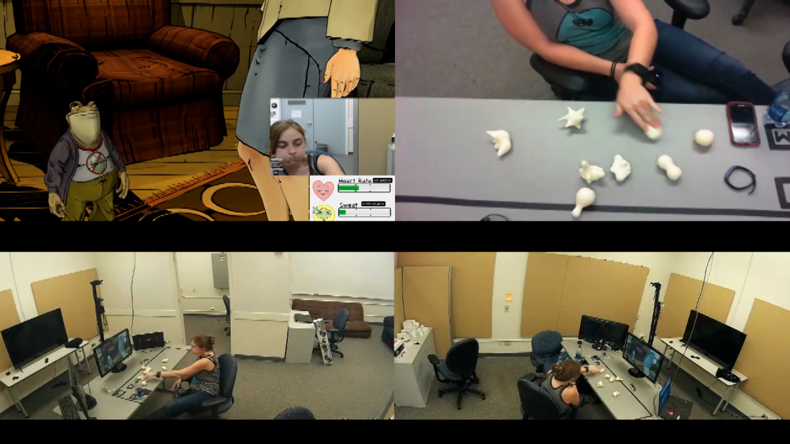

1 Title
Focus On Story: Using Narratology-Inspired Lenses to Understand Player Affective Response Data in Choice-Based Interactive Narratives
2 Abstract
Previous player experience studies involving story-driven games such as modern adventure games have focused on evaluating gameplay-related player feelings such as agency, transportation or immersion, but none have focused on the core of story-driven games: emotional engagement with the story. We ran a study with 7 subjects playing a contemporary interactive narrative and recorded physiological measurements, the Sensual Evaluation Instrument (SEI) use, and facial expression recognition. Our goal was to trace individual player relationship patterns between affective responses and story elements. Therefore we developed several features derived from narratology and screenwriting craft to analyze the data collected from the perspective of plot, character, and values. We tagged annotations of videos in order to analyze player choices and affective responses using these three approaches. We argue that leveraging a narrative-based content analysis of a narrative game provides deeper insight into quantitative player experience data.
3 Body
3.1 Introduction
Stories are designed to elicit emotional responses and to engage their audience .
Game analytics has traditionally been composed of player observation
Game Telemetry has made possible data mining on actual player data, and is useful in research and production contexts when studying a work where you have access to source code.
Kevin Bruner discusses using clustering techinques to understand player data using Telltale's telemetry.
Some work on reuniting Narrative Analysis and Adventure games has been done (https://www.cp.eng.chula.ac.th/~vishnu/gameResearch/design/narrative.pdf)
We propose an alternative strategy to Telltale's: analyze player experiences of existing released games for insights using a combination of traditional qualitative and quantitative methods.
Our hypothesis is that by using narrative theory to sort the experience data, the insights of different player reactions and successful design examples can be gleaned from fewer samples than those where statistical measures are available.
There are really three things to analyze: The work itself, the interaction of the work and the players, and the players themselves.
3.2 Background
This project crosses many boundaries of traditional efforts, charting both a non-textual interactive narrative as well as one that is previously published. The following sections describe the current efforts in both modeling narratives as well as understanding player experiences.
3.2.1 Modeling Narratives
Following in the original models of meaning in artificial intelligence research started by Shank with conceptual dependencies, a number of approaches have been developed by the community over the years to capture aspects of narrative in a computable model, with either the goal of understanding the model as a human would need, or in using these models to create a story. There are a number of efforts underway to model narratives, including NarrativeML (Computational Narrative) [Mani2012-py], the drama-focused ontology Drammar [Albert2016-ij,Larsen2016-sk,Rapp2001-ea]. David Elson has also taken a computational linguistics approach to charting narrative discourse using a semantic graph based approach. Much of his work with Story Intention Graphs [Elson2012-pi] and in particular focusing on descriptive methods has been an inspriation to the present work. He has made publicly available corpus of stories, the DramaBank [Elson2012-xn]. Sarah Harmon has begun revisiting the goals of SIG with a human-readable textual management system.
3.2.2 Annotating interactive media
Interactive media presents novel challenges compared to the linear media that is the focus of the descriptive models in section 2.1. There have been many efforts to operationalize these models of narrative to create novel storytelling systems, but relatively few efforts to document and analyze existing interactive narratives of which source code is unavailable. One of the first roles of the Hypermedia model was to provide a specification of what that name and product could look like with a focus on static content and linear media connected via annotations [Hardman1994-xs]. In a more descriptive vein, the OntoMedia project [Jewell2005-ya] seeks to identify parallel content in and amongst heterogeneous media. One type of result that came from the model was the evaluation of prominence of a character in a work in a written version versus a film adaptation..
3.2.3 Choice-Based Interactive Narratives
One of the primary features of the choice-based cinematic adventure game is the emphasis placed on the moment-to-moment timed choices of the player over puzzle solving, combat or other interactions. While combat and other tense events are often represented by “quick-time events,” the majority of the content is delivered by dialogue among a set of characters acting out essentially an interactive script. The gameplay is evocative of cinematic works, showing a changing perspective between characters and also incorporating shot types often seen in film and television and not often present in the middle of a typical roleplaying game. Fendt et al investigate the role of actual agency versus perceived agency in text-based games. Their study compared actual branching storylines with those that are similar to the structure of Telltale games, which includes primarily short-term feedback of the responses to a particular choice [Fendt2012-xe]
Peter Mawhorter has made contributions to understanding choice poetics, synthesizing a range of research into a foundation for a theory of choice aesthetics [Mawhorter2016-cx]. In it, Peter not only devises a set of narrative dimensions to map his work across, but also assesses the measures he developed through an online gam. The main shortcoming of his approach, analyzing choices based on player goals, is the diverging set of player goals and identities vital to the work itself. Cardona-Rivera et al take a different approach with their analysis of choices, using a situation model to decide whether choices were in fact meaningful or not based on whether a choice would result in a change in the situation is some way [Cardona-Rivera2014-ed]. Both studies have focused on textual choose-your-own-adventure style games and thus miss out on the opportunity to see choices influenced by non-textual factors such as tonality, dramatic presentation, cinematographic or even visual appearances. Many subtle influences are exerted in The Wolf Among Us either by the characters themselves or by the creators to influence a particular interpretation of events or characters, and the choices often feature and reinforce that interpretation heavily.
3.2.4 Player and Player Experience Modeling
Many works have started charting the specific reactions of players to interactive narratives. The exact nature of how reader response is shaped is theorized by Mani [Mani2010-sh], whose focus is on the evaluation of characters by the reader, whereas along a similar vein but Battaglino and Damiano focus on the character appraisal of each other [Battaglino2014-gh]. Part of the tendency is to model these effects with a goal of optimization, or finding an ideal model to represent the reader’s response or the character’s affect. In contrast to this, Roque engages directly with the hermeneutics of literary complexity in text [Roque2012-fd], a reminder that the sheer amount of meaning embedded in a communicative media may not be amenable to reductive approaches, again with a focus on uncovering the meaning of existing works rather than generating them themselves.
Some of the more successful approaches to using planning and knowledge of the storyworld to create or understand specific effects include suspense [Cheong2007-ts], surprise [Bae2008-js], tension [Szilas_undated-am], interestingness and specific emotional responses [Roberts2009-km,Hernandez2014-hd]. Part of the desire to understand the interactions and the totality of a longer, fully produced work is what motivates the current approach.
Another strain of work has focused on the communicated experience of expressive characters within drama, in particular their emotions. Annotating Character Emotions in Drama [Damiano_undated-sx]
Katherine Isbister et al developed the Sensory Evaluation Instrument [Isbister2006-sc,Laaksolahti2009-uw]. While we are not using every aspect of the SEI in the present study, its use is tabulated to evaluate basic affective response and the video is saved along with the annotations for future use.
3.2.5 Goals and Requirements
Given the current efforts in studying narratives and in particular experiences of players and interactive narratives, we assembled a set of requirements for a player experience corpus that would application of existing methods and models as well as facilitate experimentation with new methods and approaches. Because we wanted to establish methods that could both be used for different purposes and for future approaches to compare against current approaches, we tended to err toward a more holistic documentation of the experience from as many measurable and nonmeasurable records as possible. Nevertheless, the following requirements stood out:
Synchronizing annotations of player observation and gameplay footage. This enables training of machine learning algorithms to eventually automate any of the tagging that may take place or be used. Annotating specific events in the playthrough. This includes any event that can be identified through a videofeed of the gameplay itself or by the player’s interaction with it. Connecting events across “shared” content. An audience watching a movie all witnesses the same story. In the case of interactive stories, the prior events or even the selected response of the player-character may vary significantly, and these lead to potential problems when comparing a player’s response to the same content. The method should allow for tracking both current content choices as well as prior choices that led up to it. Enable future elements derived from the gameplay footage, e.g. gaze, expression, posture to be visible and able to be connected to the other annotated features
3.2.6 Telltale Games’ The Wolf Among Us
With these goals and requirements in mind, we selected Telltale Games’ The Wolf Among Us as it had an acceptable amount of complexity and narrative variation while taking advantage of many of the emotional-targeting authoring techniques often used for modern televisions). In this section we’ll review the overall game, including plot for the first episode, as well as the types of dramatic scenarios present.
Telltale Games has similar goals to television series creators, that of emotional storytelling. As a result of its original has defined this genre with
By working with a popular game genre, we can apply computational methods to the communities of discourse surrounding it. Many players discuss their choices and their experiences either through self-published videos of their own playthroughs, or through discussion forums.
First, the plot focuses on an investigation by the player-character protagonist, Bigby Wolf, of a murder in the community of Fabletown, where creatures and characters from bedtime stories have been forced to flee their homelands and take up residence in New York City. The game is based on a comic series by Bill Willingham, and has been since adapted into a canon issue ahead of time.
An important thematic and core draw for the story is the portrayal of a poignant class divide within the currently causing friction between the non-human Fables, such as the first character introduced, Mr. Toad, and the human fables. Not only are the non-human Fables unable to live in the desirable luxury apartment complex, where the mayor’s office and sheriff are, but they are mandated to wear a special enchanted item called a Glamour that gives them any appearance possible.
The game is divided into 6 chapters, with the 4th chapter being essentially a choice of ordering of two scenes within the 5th chapter (having Snow and Bigby visit either Toad’s apartment or Prince Lawrence’s apartment first). The game primarily employs choices in the form of timed sets of buttons to respond to a particular situation as the player-character. Often the player-character will also deliver lines and actions without prompting to either set up the scene or deliver a necessary kernel for each story. While analyzing the game for the pilot study, a number of types of mechanics were identified by their functionality. The three primary ones are dramatic choices, exploratory choices, and game choices. The focus of the present study is on dramatic choices, which are characterized by values and relationships over material gain or access.
3.3 Goals and Approach
- The primary goal was to understand the relationships between player's emotional response and the narrative elements that gave rise to them. A secondary goal was to map objective metrics of the player experience and emotional response into the context of the story itself, even as the story varies for player to player.
- And finally, what makes for a successful interactive narrative, ignoring for the moment the role of agency, immersion and production quality.
- We anticipated that player's emotional investment in the two penultimate story events would depend on their previous levels of engagement with the story, as represented by both their surfacing of emotional reports at certain points and by the amount they cared about the outcomes of their decisions, both in respect to the values represented as well as the characters themselves.
3.3.1 Study Design
We conducted a preliminary study with 7 participants. Each participant was instructed to play through the first episode of The Wolf Among Us, using All the Feels (ATF) [Robinson2016-qr], Sensual Evaluation Instruments (SEI) [Laaksolahti2009-uw,Isbister2006-sc], and think-aloud techniques. Post game, the participant did a retrospective think aloud and filled out the Immersive Experience Questionnaire (IEQ). We wanted to know the benefits of this emotion evaluation suite at various points of play. As a prerequisite to participate in the study, we required that the participant had never played the game before so their reactions would be unadulterated. We chose this particular game because of its easy controls to pick up for a non-gamer, as well as its range of narrative mechanics and emotional palette. The work represents a subgenre of adventure game that focuses on moment-to-moment player choices relating to dramatic beat [Murray2017-ak] As why we chose it] 
At the beginning of the session, we started by having players take a pre-game questionnaire, asking them a variety of questions relating to familiarity with the Fables comics lore the game is based off of or any other telltale games which may bias their feelings. We then calibrated the SEI, which consists of showing the users a set of 10 photos of different images and having them indicate with the SEI which association came to their mind for that particular instrument. We then instructed participants to play the game, think aloud, as well as use the SEI as much as possible. They were also equipped with the Empatica E4 wristband (ATF) to track their HR and GSR data. The facial recognition, Affdex, from ATF was running as well [Robinson2016-qr] At the end of the session, we conducted a retrospective think-aloud with the player about how they felt at certain peak moments of the game, how they felt about various characters, and why they used specific SEI during play. We then instructed them to take the IEQ as an additional method for comparison. We then analyzed the data and correlated the moment-to-moment choices with use of the SEI, biometrics, and think-aloud.
We needed to annotate the actions taken during the playthrough, the presented choices, and any player reports of emotions. Cinematic choice-based adventure games employ a variety of interaction mechanics. These include inventory (keeping track of items that affect choice availability), navigation (moving through a 3D environment which displays “hotspots” indicating possible interactions. These can also affect the state of items in the environment, such as whether a fan is on or off, and include triggering “satellite” content such as the player-character commenting on a particular item in their apartment (see [Chatman1980-rl]). We understand that modeling the full diverse range of mechanics does not need to be done all at once, and so we focused on the aspects of the game most apparently tied to emotional states of players.
We focused on a subset of features were the simplest to identify by visual inspection without resorting to inter-annotator agreement validation. These included the timecode and set of alternatives of each choice presented to the player and the ultimate player decision (including not making a choice in time). The timing and the content are used to further analyze the player’s emotional context after such choices by comparing the timecodes of the instruments to that of the choices. We began the annotation process by making use of a research tool designed for multi-modal annotation of videos, Anvil [Bunt_undated-ey], an openly available video annotation tool for annotating playthrough data. Anvil represents annotations on “tracks” which allows for a set of annotations that have attributes with various types associated with them. We eventually completed the annotation using the marker feature of Adobe Premier Pro due to the sheer amount of footage, totaling at over 13 hours. The main advantage of Premier Pro over Anvil was the ease with which speed could be controlled, although specifying ranges for annotations was not as easily done. We exported the annotations into a CSV format for further work, which consisted of identifying the choice point and transcribing the choices text.
We decided to start exploring the dataset by charting the extent and variance of this new dataset, and so proceeded with mostly objective and easily annotated features without the need for inter-annotator agreement to validate the annotations. The next section presents and discusses the initial metrics of the playthroughs.
- Chose Telltale Games' The Wolf Among Us due to its critical acclaim, its independence from television franchises and the genre's integration of story and interaction.
- The Wolf Among Us is a story about a divided community of refugees from a distant land whose identities correspond to fairy tales including Beauty and the Beast and the Big Bad Wolf. In this alternate reality New York, magic enables non-human Fables to pass amongst mundies (what the residents call normal people).
- Used a variety of instruments to measure player experience, including Robinson's All The Feels, Pre and Post Questionaires, Sensual Evaluation Instrument (SEI).
- Goal was to collect as many measures of emotional intensity as possible, physiological and non-verbal.
3.3.2 Feature Design
An analysis of the traversals was made to break the content into scenes and beats, and to document choice options as well as selections
Normalizing
Based on dramatic vs non-dramatic segment, each player's frequency of expression for each measure is normalized. This allows players to be compared more directly.
Further, in measures of emotional value, the different values are weighted with self-report (SEI, expressions) weighted less than heart rate spikes or skin conductivity spikes. Combining the two into a measure without access to more fine-grained heart rate variability is an open research question.
A subset of beats and decisions were determined to be key and were selected due to their likelihood to trigger emotions or to influence the player's game experience. These were pulled out for comparison alongside choices and reaction datasets.
Time windows and scope were critical – what length of time relative to what event is of interest? Each beat was identified and then its start and ending time were annotated for each player, along with value(s) and character(s) involved. Individual story events were marked as individual annotations.
- Choice Prompts – determined that the minimum of either the time of the next choice prompt or 60 seconds
- Needed to classify them into dramatic vs exposition
- Story Events – 90 seconds following a key event timepoint
- Characters – Any time during or 30 seconds following a beat has a character involved or referenced
- Values – Any time during or 30 seconds following a beat that has a tag of a value
3.3.3 Lenses
- Choice
By examining the sequence of key choices against the overall player affect, the influence of the choice on the outcome can become more apparent. (Players that chose path A have this profile during these scenes, Players that chose path B have this profile during this scene)
- Value
As Robert McKee described, scenes turn on a value change. The values in The Wolf Among Us are Community/Self, Death/Life and Justice/Loyalty. These permeate the world and are active in every dramatically portrayed scene. By classifying beats according to the values, the player's response to certain values can be measured.
- Character
Certain characters may resonate more than others; Toad's plight as a disadvantaged member of the community may be disguised by his acrid air and haughty manners. Grendel's valid grievances are hidden behind a wall of rage and disrespect. Faith and Snow both are sympathetic and conflicted.
- Plot
A mystery turns on information. Each detail progresses the interest, from the discovery of the crime to the leads going down dead ends. These elements define the plot and they stand out as singular points.
3.4 Results
- Emotional Map (regular boxes of each beat, alongside value and each player's emotional response during that beat)
- Expressive profile of players (how likely are they to be detected by an affective measure, both during dramatic / QTE / non-dramatic segments)
- Sorting players by Value preference, Character preference, and Plot preference, with preference defined as a tendency to react after or in the window of each focus.
- Choice analysis – distribution of choices and relation of key choices to the antecedent event/beats.
3.5 Discussion
- Measures provide an integrated map of intended effects and player responses
- Variety is good despite small sample size
- Combining measures eliminates some amount of noise, especially when normalized and grouped according to content model.
- More work can be done on modeling story elements using a formal model such as SIG
- Takeaway is to understand narrative forces in other games and critique their execution using such a method.
3.6 Conclusions and Future Work
With an increase in the density of the data, visualization will become ever more important. While we subjected the dataset to basic mathematical analysis, more advanced questions relating causes from narrative origins to potential effects will require an interactive visual interface. Further analyze emotional data based on calibrations and compare to other measures of emotion (for both characters and for the player).
We would like to attempt to automate many of the more mechanical feature detection tasks and focus annotation efforts on semantic challenges such as meaning and story structure. To this end, we’d like to use multiple story models on the same corpus for comparison (SIG + Drammar, for instance).
Analyze choice paths based on the values expressed by the player both about morals and about particular characters and visualize how they change over time. This is well supported by this dataset.
In this paper we presented a methodology for collecting the videos of both player behavior and gameplay captures as well as emotional and physiological signals. We argued for the focus on longer form commercially available works as subjects of experiments and presented the initial results of an analysis of a study of 7 participants playing Telltale Games The Wolf Among Us. We evaluated the effectiveness of our corpus by comparing the usage of emotional instruments to the choice points across a variety of traversals, finding that the diversity in expression was not easily uncovered. We believe there are a number of opportunities for developing holistic models that capture narrative, emotion and context in order to understanding player experiences in interactive narratives.